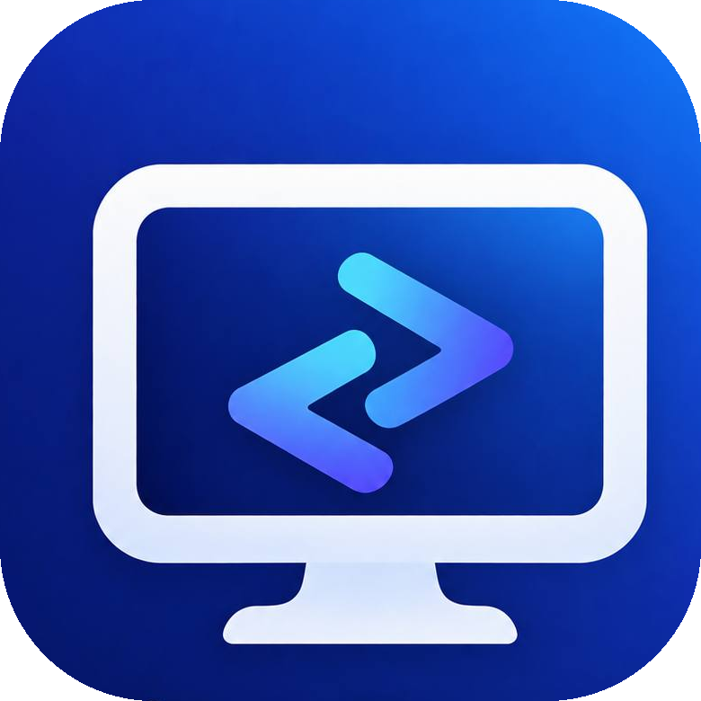

KianDesk 是一款基于 Rust 构建的快速、安全的远程桌面客户端。 通过您自己的服务器连接 —— 没有第三方，没有妥协。
仅连接到您自己自托管的服务器 —— 您的会话永远不会经过第三方。
Rust 内核保持低延迟，搭配在各平台上都拥有原生体验的 Flutter 界面。
基于同一代码库，为 Windows、macOS、Linux、Android 和 iOS 提供原生构建。
运行您自己的 KianDesk-Server，获得完全的独立性与控制权。
桌面与移动客户端应用程序。
自托管的中继与转发服务器。